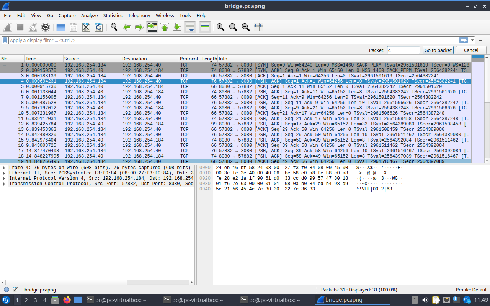

Uma frota.
Uma central.
Um protocolo.
Veja como caminhões simulados enviam velocidades e recebem atualizações de rota usando sockets TCP e o protocolo PTR.
Representa um caminhão e envia uma velocidade simulada a cada 5 segundos.
O TCP conecta as duas pontas e transporta os bytes das mensagens PTR.
Recebe vários clientes e responde com confirmação, rota ou erro.
Uma conversa em movimento
Escolha uma ação para acompanhar uma troca possível. Esta é uma simulação visual; ela não abre sockets.
Caminhão
Central · TCP 8080
O exemplo mostrará a mensagem enviada e a resposta.
A animação acompanha o sentido das mensagens; as respostas são exemplos fixos.
Como ler VEL|002|75
O cabeçalho é VEL|002|, com 8 bytes. O corpo 75 ocupa 2 bytes ASCII. O tamanho é contado em bytes, não em caracteres visuais.
| Mensagem | Significado | Resposta |
|---|---|---|
VEL | Envia velocidade | ACK |
REQ | Pede rota; corpo vazio | RES |
ERR | Descreve um erro | Depende do erro |
Camadas: quem faz o quê?
Define tipo, tamanho, corpo e significado das mensagens.
Leva um fluxo de bytes ordenado e confiável entre as portas.
Usa endereços IP para identificar origem e destino dos pacotes.
Na interface da VM, o pacote IP apareceu dentro de Ethernet II. No caminho físico, o enlace depende da tecnologia usada, como Wi-Fi ou Ethernet.
Dois terminais, uma conexão
No Linux, com GCC e make instalados, abra um terminal na pasta projeto2:
make ./servidor
Em outro terminal, na mesma pasta:
./cliente 127.0.0.1
Digite REQ para pedir rota e SAIR para sair. Para acessar outra máquina, use o IP dela no lugar de 127.0.0.1. Abra outros clientes para ver conexões simultâneas.
O que vimos no Wireshark
Em Bridge, a VM 192.168.254.184:57882 conectou ao servidor 192.168.254.40:8080. O pacote 4 contém VEL|002|63; os três primeiros mostram o handshake TCP.


Perguntas para pensar
Por que TCP e não UDP?
TCP fornece um fluxo ordenado e confiável, útil para dados e respostas de rota. O custo é maior sobrecarga e possível atraso por retransmissões. UDP pode servir quando a informação mais recente é mais importante que garantir todas as anteriores.
Por que não basta chamar recv uma vez?
TCP não preserva os limites das mensagens. Uma leitura pode retornar só parte do cabeçalho ou do corpo; o código repete a leitura até completar o tamanho necessário.
Qual a diferença entre os dois ACKs?
O ACK TCP faz parte do transporte. O ACK|000| do PTR é uma resposta da aplicação após processar uma velocidade válida. Nenhum dos dois significa que houve gravação em disco.
O que é Bridge?
É a ligação da interface virtual à rede física. No teste, VM e anfitrião receberam endereços da mesma rede. Isso depende das permissões da rede e do firewall.
Leia também o README e o relatório para compreender as funções, os testes e os limites da implementação.